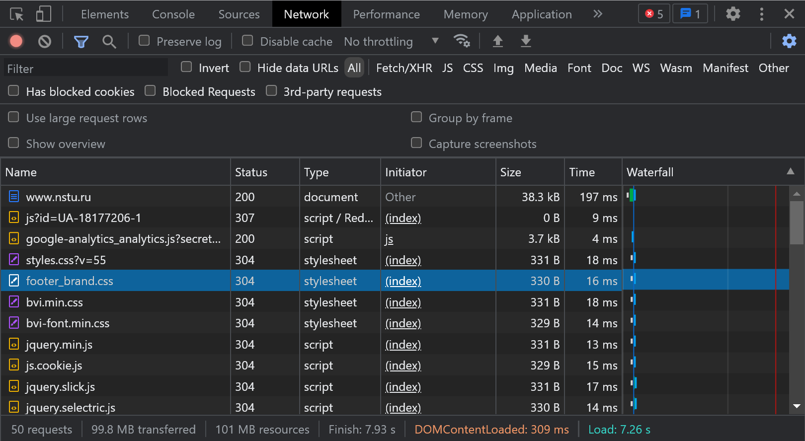
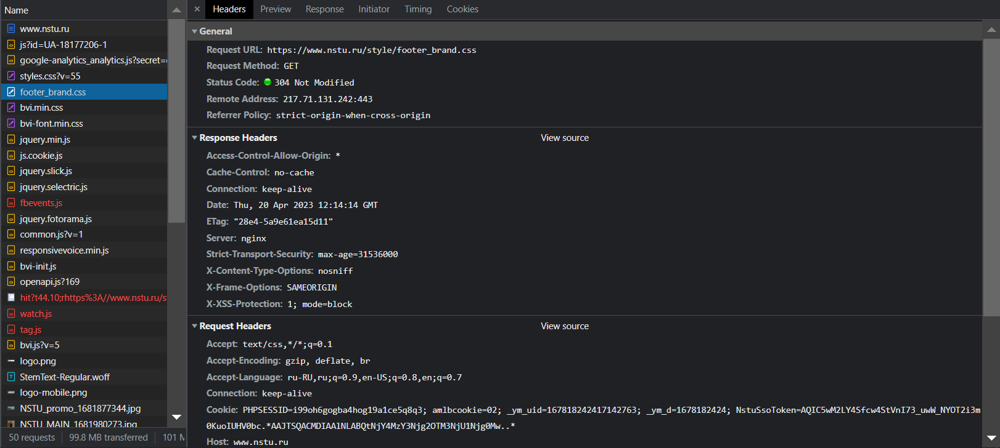
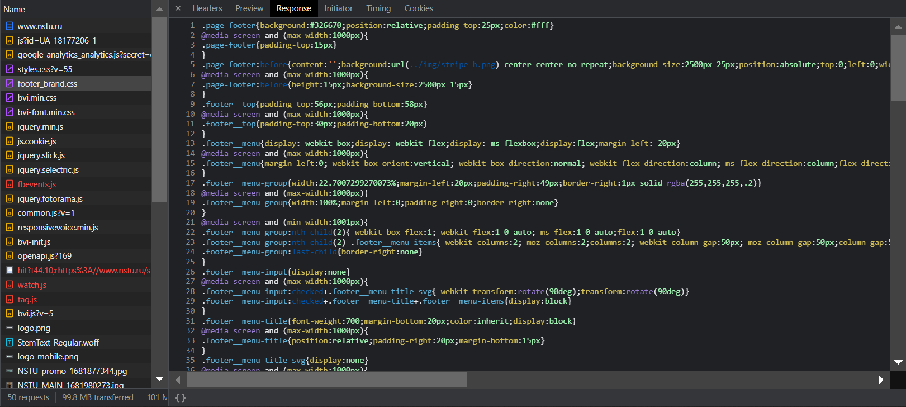
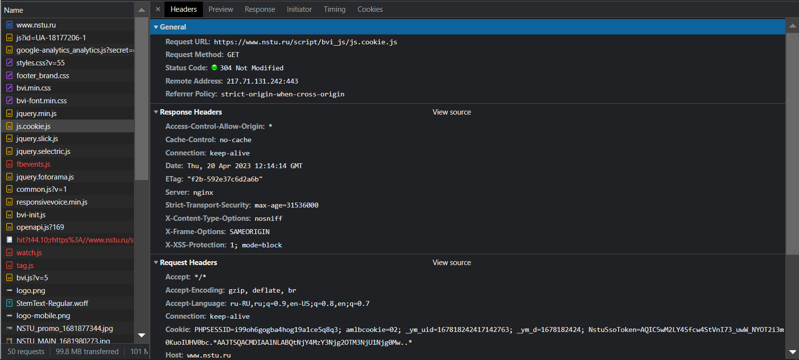
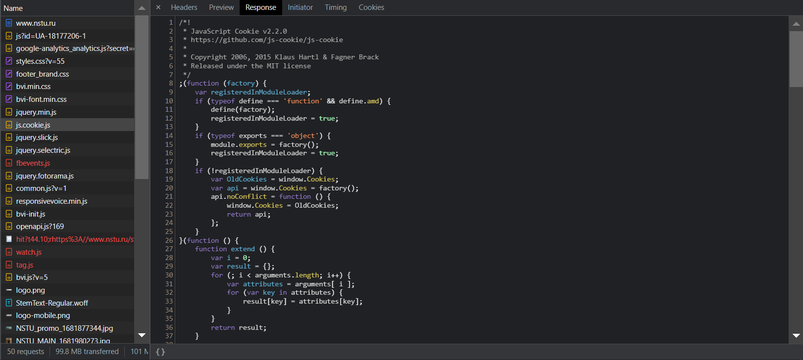

Задание: Инструменты разработчика Chrome (вкладка Network). Открыть браузер Chrome, нажать F12, перейти в открывшемся окне с инструментами разработчика на вкладку network, и зайти на любой интернет-сайт, например ngs.ru. Посмотреть список запросов и в нескольких запросах подробную информацию о заголовках http-запроса и ответа сервера, содержимое ответов.




